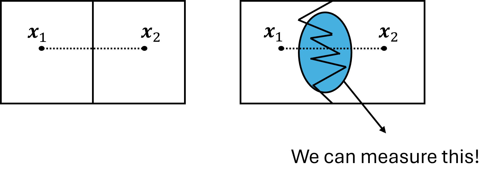

Problem Statement
The paper extends previous results on the space folding measure $\chi$. We study a neural network as a map \(f:\mathcal{X}\to\mathcal{Z}\), where $\mathcal{X}$ is the input space and $\mathcal{Z}$ is the discrete activation space. We interpret the learning process as reshaping the input space into an internal representation space.
Space folding is central when different parts of the input space are brought together because the model has learned a task-relevant symmetry. If \(x\) and \(x'\) are different inputs but share structure, then a good representation may make \(f(x)\) and \(f(x')\) close or otherwise geometrically related.
The contribution of this work is to treat folding as something that can be encouraged during optimization. Operationally, the training objective combines task performance with a geometric preference:
\[ \mathcal{L}_{\mathrm{total}} = \mathcal{L}_{\mathrm{task}} + \lambda \mathcal{L}_{\mathrm{fold}}. \]
This treats folding not only as a diagnostic quantity, but also as a regularization signal for representations with stronger internal structure.
What we establish in this paper
We generalize the original ReLU folding measure to a wider class of monotone activation functions by working with activation-induced equivalence classes. We also analyze several structural properties of the folding functional: stability under repeated samples in the same activation region, the flatness condition \(\chi(\Gamma)=0\), direction dependence, invariance of flatness under path reversal, and non-additivity under concatenation.
Two points were especially important for later work. First, we observe that folding is not symmetric in general: a path \(\Gamma\) and its reversal \(-\Gamma\) can have different values of \(\chi\). The paper nevertheless conjectured, based on empirical evidence, that in large networks the difference \(|\chi(\Gamma)-\chi(-\Gamma)|\) should tend to zero. Second, the adversarial part of the paper is exploratory: it uses the non-additivity interaction coefficient \(I\) on paths between clean and adversarially perturbed MNIST samples, mainly for FGSM and PGD, as preliminary evidence that folding statistics interact with decision-boundary geometry.

What the newer analysis adds
The newer activation-decision path analysis makes the reversal question rigorous at the level of finite activation paths. For an activation path \(\Gamma=(\pi_1,\ldots,\pi_n)\), let \[ L=\sum_{i=1}^{n-1}d_H(\pi_i,\pi_{i+1}),\qquad D=d_H(\pi_1,\pi_n). \] The new result proves the deterministic endpoint and reversal bounds \[ \frac{1}{2}\left(1-\frac{D}{L}\right) \le \chi(\Gamma)\le 1-\frac{D}{L},\qquad |\chi(\Gamma)-\chi(-\Gamma)|\le \frac{D}{L}. \] Thus forward and reverse folding become asymptotically equal whenever the endpoint displacement is negligible compared with the activation-path length, \(D/L\to0\). This gives a precise pathwise mechanism for the conjecture from the AAAI paper, rather than leaving it as an empirical large-network observation.
The adversarial component is also substantially extended. Instead of computing a single interaction coefficient between a clean point and an adversarial endpoint, the newer analysis traces the realized attack trajectory through full ReLU activation regions and class-pair margin roots. For affine rays and polygonal attacks, this reduces the geometry to finitely many one-dimensional affine margin tests along the visited regions.
This separates two phenomena that were only linked heuristically in the AAAI paper: decision-boundary crossing and activation-space folding. The newer analysis shows that adversariality and folding are logically independent: an adversarial crossing can occur inside a single activation region, while a highly folded activation path may never cross a decision boundary. It also introduces a first-boundary context, recording the activation path before the first class-pair margin root, its folding value, boundary proximity, and boundary-split interaction.
In this form, adversarial attacks become trajectory classes. FGSM is treated as an affine ray, BIM and PGD as polygonal first-order paths, DeepFool as a sequence of local affine projections, sparse attacks as coordinate-constrained paths, and query-based attacks as observed query trajectories. The novelty is therefore not a new attack or defense, but a geometric description of the path an attack actually takes through activation and decision structure.
BibTeX
@article{lewandowski2026exploiting,
title = {Exploiting Space Folding by Neural Networks},
author = {Lewandowski, Michal and Pisoni, Raphael and Heinzl, Bernhard and Moser, Bernhard A.},
journal = {Proceedings of the AAAI Conference on Artificial Intelligence},
volume = {40},
number = {27},
pages = {22833--22840},
year = {2026},
doi = {10.1609/aaai.v40i27.39446},
url = {https://doi.org/10.1609/aaai.v40i27.39446}
}